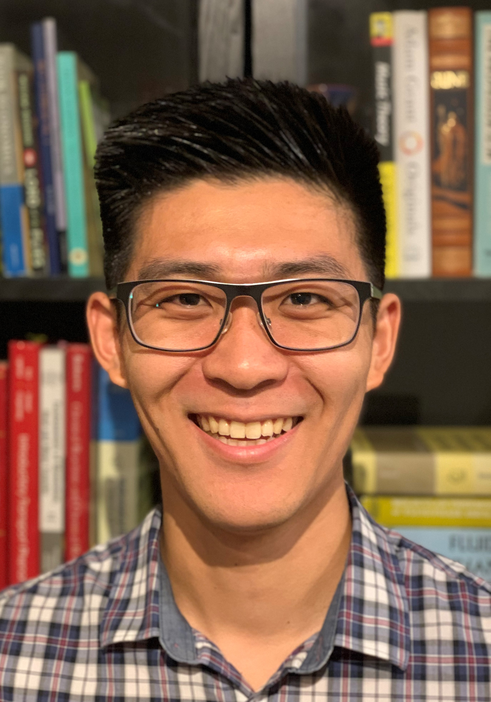

About MeI am an Assistant Professor of Mathematics (tenure track) at Swarthmore College in the Department of Mathematics & Statistics. My research focuses on developing efficient and robust algorithms for solving partial differential equations. Recently, I have studied applications of low-rank tensor decompositions and their applications in plasma physics and fluid dynamics.
I currently serve on the editorial board of MAA FOCUS, the newsmagazine of the Mathematical Association of America, as well as the board of directors for Spectra, the Association for LGBTQ+ Mathematicians). I am deeply passionate about promoting diversity and support of LGBTQ+ mathematicians, especially at the the undergraduate and graduate levels. In addition to my Spectra involvement, I helped form the Queer and Trans Graduate Students Union (QTGSU) at the University of Delaware and was a board member during the 2021-2022 academic year.
I grew up near Seattle, WA and received my B.S. in Applied Mathematics from Seattle University in 2018. I then received my Ph.D. in Applied Mathematics from the University of Delaware in 2023. Outside of school, I enjoy running, cooking, book collecting, scoping out hidden restaurants, playing video games with my partner, and reading in coffee shops.